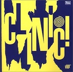

Top 100 Debut Albums (Honourable Mentions)
Last week we posted the biggest ever feature in No Ripcord history – our Top 100 Debut Albums list. To say it generated fierce debate amongst the No Ripcord writers would be an understatement – there was confusion, shock, and even outrage at some of the omissions and inclusions. A number of writers jumped at the chance to contribute short pieces on the records that they firmly believe should have made the list. Consider these Honourable Mentions a worthy supplement to our original Top 100 and by all means use the Disqus form below to tell us about your own favourite debuts.
The original Top 100 list can be browsed using the links below:
[Part One: 100 to 81] [Part Two: 80 to 61] [Part Three: 60 to 41] [Part Four: 40 to 21] [Part Five: 20 to 1]
FUGAZI
Repeater
(Dischord, 1990)
Fugazi released two EPs before their first full-length in 1990, Repeater. Preceding the Alterna-splosion by only a year or so, not to mention all the faux-tortured angst and anti-industry posturing that followed, Fugazi remained true to their convictions, refusing any and all association with the major labels, keeping their door prices very modest (Eat shit, Pearl Jam) and only utilizing all-age venues for their gigs. In the face of their philosophies, though, (“We don’t have to try it and we don’t have to buy it!”), Fugazi’s music is often overlooked, Guy Picciotto’s very passionate vocal and Ian MacKaye’s authoritative tone playing against the band’s post-hardcore idiosyncrasies. Funk-driven and propulsive, melodious while abrasive, songs like the album’s title track, Merchandise, Greed and Styrofoam illustrate Fugazi’s tendency to be a tad preachy. But then songs like Turnover, Blueprint and Shut The Door add a very emotional angle to their craft, a unification of creative ideas brought to fruition in the wake of Rites Of Spring, Embrace and One Last Wish. Repeater would begin one of the most fruitful, distinguished and consistently unique discographies to emerge from independent music, Fugazi’s true brilliance in its refusal to cater to any whim or compromise their creative vision. (Sean Caldwell)
THE STREETS
Original Pirate Material
(Locked On / 679, 2002)
How this got overlooked I'll never know. Touching on the highs and lows of inner-city life with wit and verve, Mike Skinner's first release under The Streets moniker is rightfully regarded as a modern classic. The commonplace and mundane – sinking Kronenbourg in the pub, fights in fish ‘n chip shops and stoned N64 sessions – are brought to life with startling clarity thanks to Skinner's humorous and insightful wordplay, set to an endearing backdrop of stripped-back UK garage, ska and hip-hop. Though underpinned by a faint sense of wistful nostalgia, especially on standout track Weak Become Heroes, the overall package is an upbeat encapsulation of the minutiae of British life in the 21st century, warts and all. A very special record. (Gabriel Szatan)
SLOWDIVE
Just For A Day
(Creation, 1991)
In David Cavanagh’s otherwise excellent Creation Records biography, Slowdive are barely seen worthy of a mention. A great shame, as to me, they will always be the most sonically fascinating band on the label. And yes, I put them ahead of My Bloody Valentine. After a series of superb EPs, Neil Halstead took his troops into the studio for the first of three groundbreaking albums. Just For a Day wasn't that most common of creatures – the too-early career peak – but instead showcased the first steps in what would be a series of albums unparalleled in the 90s. Gorgeous vocals from Rachel Goswell, indescribable beauty from the guitars... it's no wonder Eno wanted to work with them. (D.C. Harrison)
YEAH YEAH YEAHS
Fever To Tell
(Interscope, 2003)
It really, really shouldn't work. On guitar, a rake thin, studious-looking urchin who’s at least 50% quiff. On drums, a bespectacled, classically trained jazz musician fond of elaborate fills. On vocals, a whirling dervish fresh from the dressing-up box who communicates in a series of yelps. On bass... well, there is no bassist. Yet somehow it all came together on Fever To Tell. The first six songs race by in under 20 minutes barely leaving time for breath. They’re brash and scuzzy, they call out crap men and bitchy girls, and they’re life-affirmingly thrilling. But there’s more strings to FTT’s bow than mere bluster. Album highlight, Maps, is a tender lament to a lover far away that manages to both rock and be emotionally affecting at the same time. They were overshadowed in the conventional music press upon their emergence by more traditionally photogenic bands, but on Fever To Tell, Yeah Yeah Yeahs execute their art-school, angular, frenetic sonic blasts to perfection. (Joe Rivers)
EXPLODING HEARTS
Guitar Romantic
(Dirtnap, 2003)
Just three months after releasing the brilliant Guitar Romantic, three members of The Exploding Hearts were tragically killed when their tour van crashed on the way back from a show in San Francisco. Three young lives and one truly great punk-rock band were lost in a heartbeat. Although Guitar Romantic owes a heavy debt to the band’s idols – The Buzzcocks, Ramones – it has the songs and the sheer energy to match and occasionally even eclipse those genre heavyweights. Modern Kicks might even be the best punk-pop song of the 00s. Regardless of what happened next, we should remember the Exploding Hearts for this classic record. (David Coleman)
LEFT BANKE
Walk Away Renée / Pretty Ballerina
(Smash, 1967)
You’ve heard The Left Banke countless times before in different guises – their merger of polite chamber instrumentation with sixties pop can be heard in the elegant, scrupulous arrangements of XTC and Field Music, the pastoral folk of the Decemberists, and the artful preciousness of Belle & Sebastian (Stuart Murdoch himself has publicly cited them as major influencers in their developing stage). Walk Away Renée/Pretty Ballerina is an inconspicuous miracle, a double-sided joy of clear-cut pop songs written with harpsichord, keys and strings in mind. They’ve been falsely coined as precursors of the term “baroque pop”, most likely taken into account by those who’ve only heard their minor hit Walk Away Renée, but their standing was always to make tuneful, rollicking records that are richly detailed, and at times, freely exuberant (has any other band done woodwinds with such rocking riffs?) The Beach Boys may hold the torch for bringing a more experimental offering to pop music, but this unsound troupe had a mission to make intricate arrangements accessible without the hallucinogenic overtness. (Juan Edgardo Rodriguez)
THE PRETENDERS
The Pretenders
(Real, 1980)
This debut introduced Chrissie Hynde’s magnificent voice to the world, who after missing the punk bandwagon finally got her break. It was worth the wait because she honed her style and found great musical allies in Pete Farndon, James Honeyman Scott, and Martin Chambers. Favorites are hard to pick when you have the hard-edged statement of Precious, the sexy Up The Neck, the tender portrait of prostitute and child of Kid, and the jangly cover of Stop Your Sobbing. Missing the 100 List was clearly an oversight. (Angel Aguilar)
TRICKY
Maxinquaye
(Island, 1995)
Maxinquaye is the third in a holy triumvirate of albums from Bristol based acts that invented a sound (Massive Attack’s Blue Lines and Portishead’s Dummy being the other two). What lesser artists then did with that sound, i.e. dilute it and remove any sense of danger or darkness should not detract from Tricky’s achievement. Listening now, so many years later, to Maxinquaye it is clear just how far ahead of the pack he was with this album. It covers sex, identity, technology, alienation, using the conventions of hip-hop and R’n’B but to an end that was entirely Other. At the album’s core is the astonishing, hypnotic seven and a half minutes of Aftermath, a song that samples Marvin Gaye, Japan and Blade Runner: “Let me tell you about my mother...” Martina Topley-Bird’s vocals provide a sensual counter to Tricky’s narcotic croak, and imbue these songs with human warmth and erotic charge. The overall effect of the album is shamanic, it contains worlds within worlds and we are still uncovering its myriad mysteries. Any meaning, though, remains hidden in its shadows. It’s not just one of the great debuts; it’s one of the great albums of all time. (David John Wood)
THE AVALANCHES
Since I Left You
(Modular, 2000)
When you consider how difficult it can be for an artist to get clearance on the use of just one sample in a song, it’s remarkable that The Avalanches’ Since I Left You was ever officially released. The album reportedly includes over three thousand samples – ranging from obscure 60s pop to Latin American dance, early 20th century classical music to Boney M – all of which have been intricately woven together to create brand new songs. But Since I Left You is more than just clever trickery. It’s a joyous, hedonistic, high-spirited romp; reminiscent of warm, long summer evenings and parties on the beach. It’s fun and accessible, yet complex and layered. And despite the diverse range of samples used (Frontier Psychiatrist memorably includes samples of a horse bleating and a scratched sample of a parrot squawking), it’s a remarkably coherent and enjoyable piece of music. (Craig Stevens)
CLINIC
Internal Wrangler
(Domino, 2000)
I was pretty disappointed when I didn’t see Clinic’s Internal Wrangler on No Ripcord’s Top 100 Debut Albums list. Albums that I had personally placed higher on my own list were excluded, but for some reason, this is the one I was confused over. Surely an album this bizarre, this implacable, and unrepeatable deserves a place. It’s got an air of oddly peaceful paranoia, where shuffling rock and electronics lurch together covered by Ade Blackburns claustrophobic vocals. Songs like Distortions are downright creepy, but surrounded by others that give off an eerie playfulness. It’s a mysterious record both musically and lyrically. I’m never really sure what they’re on about, but I know it’s uncomfortable and unforgettable. It latches on from the first song, where it buzzes and builds then breaks down into a smooth, rhythmic swirl. They jump from chugging kraut-rock, to electronics, ambient to garage, and somehow make it all sound like a perfectly conceived whole, one so cohesive that it can’t be thought of any other way. Sure, it might not have been the highest on the list, and it doesn’t necessarily deserve to be. But it does deserve recognition, disturbing, unsettling and inescapably excellent recognition. (Andrew Baer)
LIZ PHAIR
Exile In Guyville
(Matador, 1993)
Liz Phair is often discussed solely in terms of her sexuality, and – raw and unhinged as it is on Exile in Guyville – the standout thing about this record is Phair’s remarkable songwriting. Her sense of melody and her complete mastery of guitar chord-progressions ensures that each song on Guyville sounds like a classic. It’s catchy and timeless for all 18 tracks, which is more than most of her 90s alt-rock contemporaries could manage. She uses shock tactics on Flower to reclaim women’s power to objectify men, satirises masculine self-assertion on Soap Star Joe, and tries to accept her inability to commit on Fuck And Run, all with her unique knack for vivid yet simple imagery – even the tracks that avoid sexuality, like Stratford-on-Guy, are distinctive. She delivers the whole thing with deft honesty and a fearless disregard for her inevitable sexist critics – it’s a tour-de-force of songcraft. (Stephen Wragg)
TITUS ANDRONICUS
The Airing Of Grievances
(Troubleman Unlimited, 2008)
The Airing of Grievances might not be as fully realized as its 2010 follow-up The Monitor, but it is nevertheless a great punk album and indication of what is to come. There is no shortage of the band’s literacy here; the album title is a Seinfeld reference, the opener’s name is a play on the title of a Hunter Thompson novel, and the closer is named after Albert Camus – all from a band that takes its moniker from a gory Shakespeare play. And this tells you everything you need to know about The Airing of Grievances, a hard hitting album with plenty of attitude that rightfully garnered comparisons to Bruce Springsteen for the band’s knack for anthems and smart lyrics, all with an angry, punk rock edge. Airing contains all of the attitude that Titus has never given up, from its lo-fi production to the band's first of many battle cries, "your life is over." We see two parts of the ‘No Future’ trilogy, a hint at a concept album to come, and the track, but The Airing of Grievances stands as a great, smart punk album all on its own. (Forrest Cardamenis)
. . .
[Part One: 100 to 81] [Part Two: 80 to 61] [Part Three: 60 to 41] [Part Four: 40 to 21] [Part Five: 20 to 1]
8 December, 2011 - 23:04 — No Ripcord Staff